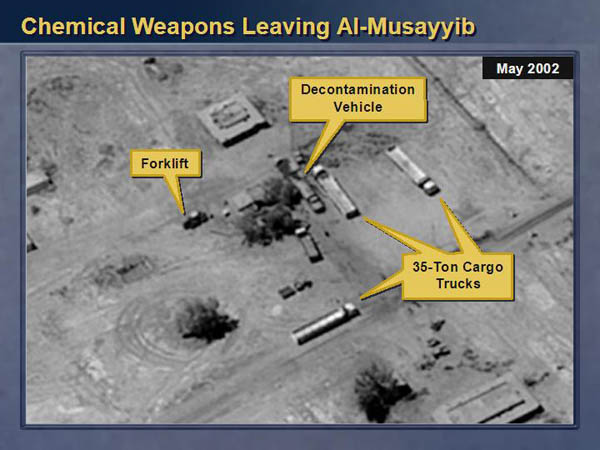

| r0.5

|
Maps carry a sense of authority that few other forms of evidence share. This is in part due to an understanding of satellite or aerial maps as a kind of `window into the world', depicting the planet `the way it really looks'. In photography, by contrast, the editorial and subjective role of the author is accepted, despite the damage which `photoshopping' has inflicted on the perceived truth or objectivity of the photographic image. Maps, however, continue to be taken as direct representations of reality, desipte the inherent subjectivity of image selection, color, brightness, and contrast processing, and the editorial eye necessary in reading and interpreting such imagery.
The best example of this attitude is of course the use of relatively poor resolution satellite imagery by Colin Powell at the UN Security Council in February 2003, which he presented as evidence to support the existence of weapons of mass destruction in Iraq. While the subsequent complete absence of weapons did little to diminish the public's faith in such imagery as objective evidence, Powell mentions in his testimony how difficult it is to interpret satellite imagery:
Let me say a word about satellite images before I show a couple. The photos that I am about to show you are sometimes hard for the average person to interpret, hard for me. The painstaking work of photo analysis takes experts with years and years of experience, pouring for hours and hours over light tables. But as I show you these images, I will try to capture and explain what they mean, what they indicate to our imagery specialists.
...
How do I know that? How can I say that? Let me give you a closer look. Look at the image on the left. On the left is a close-up of one of the four chemical bunkers. The two arrows indicate the presence of sure signs that the bunkers are storing chemical munitions. The arrow at the top that says security points to a facility that is the signature item for this kind of bunker. Inside that facility are special guards and special equipment to monitor any leakage that might come out of the bunker.
The truck you also see is a signature item. It's a decontamination vehicle in case something goes wrong. [23]
Despite the `years and years of experience' he claimed, an earlier analysis of the imagery to which Powell had access classified the claims as `weak' and points out that the so-called contamination vehicles are in fact simply water trucks. Though they acknowledge that these could have been used for chemical weapon decontamination, the doubt they express stands in contrast to the assertion of `facts' that Powell presented to the UN:
``-- 10-11.***/WEAK. We support much of this discussion, but we note that decontamination vehicles-cited several times in the text-are water trucks that can have legitimate uses. A safer characterization is, `a vehicle used for chemical weapon decontamination.`
-- 11.***/WEAK. We agree there has been suspicious activity [redacted], including presence of a decontamination vehicle. We caution, however, that Iraq has given UNMOVIC what may be a plausible account for this activity-that this was an exercise involving the movement of conventional explosives; presence of a fire safety truck (water truck, which could also be used as a decontamination vehicle) is common in such an event." October, 2002, classified National Intelligence Estimate (NIE) `Iraq's Continuing Programs for Weapons of Mass Destruction' [52]
What is most alarming about this kind of rhetorical use of map imagery is that it represents a means for those in a position of power to assert or twist truths about places they have never been, without the involvement of human testimony from those who have. The public perception of maps as an objective, quantitative standard of evidence is likely due to the difficulty and expense of producing map imagery, and the traditional monopoly of government and high-tech industry in the production of such imagery. Still, as we see in Powell's testimony, clearly even the highest levels of government are complicit in the construction of maps as an authoritative and objective form of information.